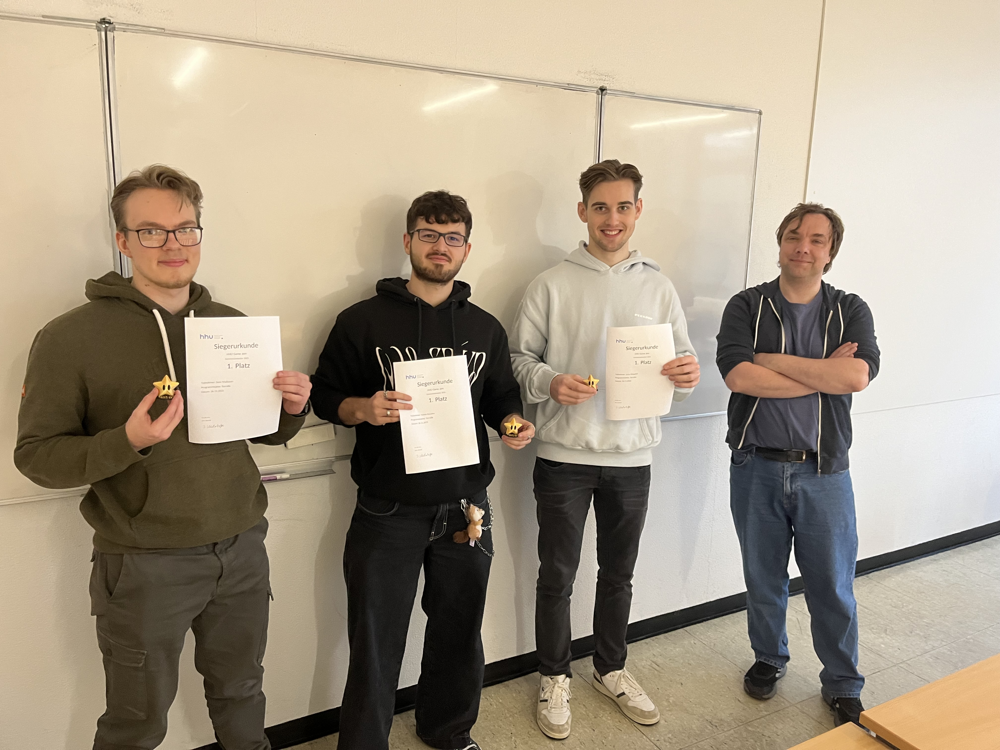

Terrafix
Planetary Restoration Reverse-Factorio. Developed during the 48-hour Game Jam 2025. Harness the power of nature to heal and recover dying worlds occupied by machines.

Technical Foundation
The core technologies and methodologies that powered Terrafix.
Unreal Engine
Development with C++ for high-performance systems and Blueprints for rapid game mechanics iteration.
Perforce
Team collaboration and versioning of complex assets in a real-time development environment.
Figma
UI/UX prototyping and visual conceptualization of the organic user interface.
Custom Shaders
Custom HLSL shaders for procedural terrain healing and atmospheric reclamation effects.
The Vision
Overview
Terrafix redefines the Factorio principle: instead of gray factories, you use the power of nature. As a small, renegade robot, you build a complex, plant-based network based on a specially developed Custom Node System.
Each plant acts as a living module with individual inputs and outputs that must be strategically linked to transform resources and clean the atmosphere. This biological factory approach allows the player to orchestrate entire ecosystems that resist mechanical oppression.
Gameplay & Tech
The gaming experience is guided by a dynamic quest system and a profound research table. By collecting items in the world, new botanical species are unlocked that are essential for survival.
-
biotech Node-based Growth
Linking plant structures for automated resource flows and energy networks.
-
shield Defense & Companions
Defending against enemy waves with the help of a loyal companion to protect the planet's healing.
-
palette Visual Reclamation
Custom HLSL shaders visualize the reclamation: mechanical corrosion gives way to blooming life in real time.
-
inventory_2 Research Table
Strategic development of new plants through found mechanical and organic artifacts.